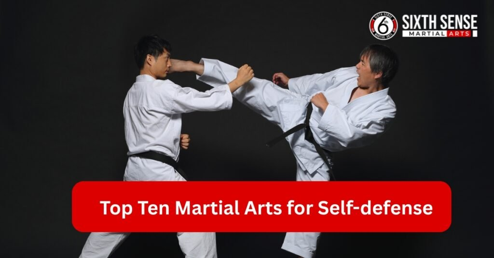
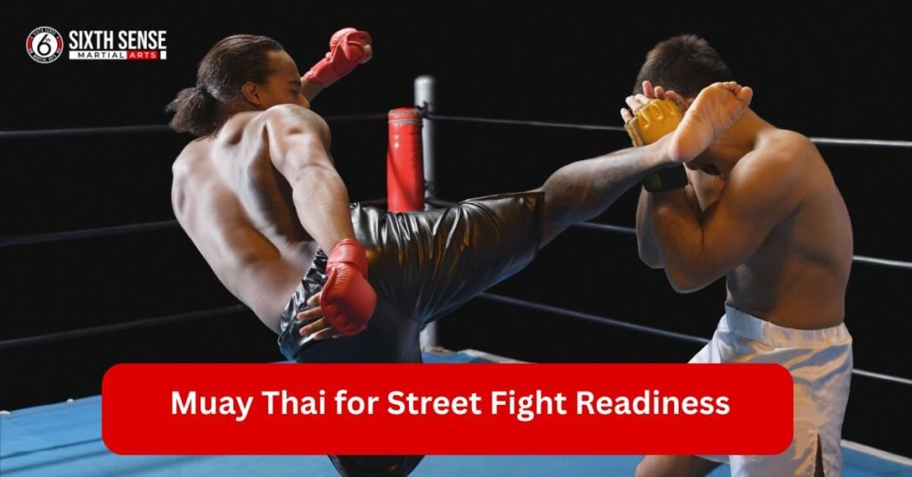
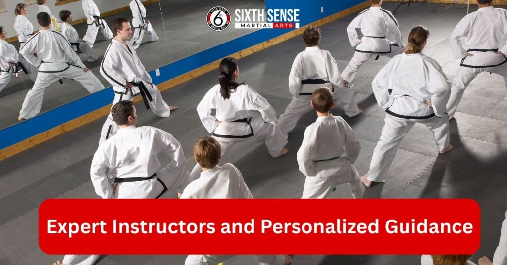

Top Ten Martial Arts for Self defense at Sixth Sense Martial Arts

Top Ten Martial Arts for Self defense at Sixth Sense Martial Arts : Everyone wants to feel safe these days. Martial arts offer a solid way to build that confidence through practical skills. At Sixth Sense Martial Arts, we focus on real techniques that work in everyday situations. Think about how learning a martial art can change your mindset. You gain not just physical strength but mental toughness too.
Our academy in Coppell, TX, brings together people from all walks of life. Beginners mix with experienced folks in a welcoming space. We emphasize Brazilian Jiu Jitsu, Muay Thai and more. Each class targets Self-defense needs specific to your age or goals. Imagine walking taller knowing you can handle tough spots. That’s what our programs deliver. Join us and see the difference firsthand. Safety starts with smart training here.
Introduction to Martial Arts for Self defense
Picture stepping into a world where you learn to protect yourself effectively. Martial arts go beyond punches and kicks. They build awareness and quick thinking for real threats. At our academy, we blend tradition with modern approaches. Students often share how classes shift their daily outlook. You start noticing surroundings better. Self-defense isn’t about fighting. It’s more like avoiding trouble altogether. We teach that mindset from day one. Our instructors guide you gently.
No pressure, just steady progress. Folks come in nervous but leave energized. We cover ground fighting and striking techniques naturally. Each session feels like a chat with friends while getting stronger. Expect laughs mixed with serious drills. That’s our vibe. Ready to explore? We make it easy and fun.
What Are Martial Arts for Self defense?
Self-defense martial arts focus on practical moves for protection. He said that Brazilian Jiu Jitsu stands out as a key example. You learn to grapple and control opponents on the ground. Muay Thai adds striking power with elbows and knees. Judo teaches throws to redirect force. Karate brings sharp punches and blocks. Wrestling builds strength for close combat. Krav Maga mixes everything for quick results. MMA combines arts like BJJ and boxing.
Each style suits different scenarios. Street fights demand fast responses. Effective martial arts emphasize real world use over showy forms. Traditional martial arts add discipline. Many martial arts adapt for Self-defense situations. Choose based on your needs. Our classes highlight these basics in a supportive way.
Sixth Sense Mma is trusted partner for Martial Arts Excels in Self defense Training
Our academy shines because we tailor programs to real needs. Instructors bring years of martial arts experience. They focus on effective Self defense techniques. Students praise the community feel. You get personalized tips during sessions. We cover Self-defense scenarios like grabs or strikes.
They mentioned that the classes include BJJ for ground work and Muay Thai for stand-up fights. Kickboxing boosts overall fitness too. Teens and kids learn age appropriate skills.Adults dive into advanced drills. Free trials let you test it out. We stress safety and fun. No egos here, just growth. People say our training builds real confidence. Join and feel the impact yourself.
Top ten martial arts for self defense
We offer a lineup that covers all bases for protection. Each one draws from proven styles. Brazilian Jiu Jitsu tops many lists for its control focus. Muay Thai delivers hard hits. Kickboxing keeps things dynamic.
Our teen programs build young resilience. Kids classes teach basics without overwhelm. Adults get intense workouts. Free trials open doors for everyone. We mix traditional elements with practical twists. Students often mix classes for full coverage. Think of it as your personal toolkit. No fluff, just skills that stick. Our approach makes learning addictive. Come see why folks stick around.
1. Brazilian Jiu Jitsu (BJJ) for Effective Self-defense
BJJ excels in turning size against attackers. You learn submissions and positions to dominate from below. Our classes start with warm ups then drills. Focus on escapes and guards. It’s one of the most effective for ground situations.
Instructors demonstrate slowly. Practice rolls build reflexes. Students say it boosts mental sharpness. We adapt for all levels. No prior skills needed. Pair it with striking for complete defense. Real stories show BJJ saving lives in surprises. Join our group and feel empowered.
2. Muay Thai for Street Fight Readiness
Muay Thai uses eight limbs for devastating strikes. Elbows slice close, knees crush mid range. Our sessions include pad work and sparring. Build endurance through rounds. It’s highly effective in chaotic spots. Clinches control opponents. We teach defense alongside attacks. Beginners start light. Progress to full contact safely. Many call it one of the best martial for raw power. Our academy makes it accessible. Sweat it out and gain edge.
3. Kickboxing for Versatile Self defense Skills
Kickboxing blends punches with powerful kicks. Sessions cover combos and footwork. You dodge and counter smoothly. It’s great for fitness and protection. We include bag drills for impact. Sparring hones timing. Adaptable for streets or rings. Students love the energy. Mix it with grappling for balance. Our classes keep you engaged. No boredom here.
4. Teen BJJ for Building Confidence
Teens thrive in our BJJ program. Drills focus on techniques like armbars. We emphasize respect and teamwork. Classes run after school hours. Build bonds with peers. It’s perfect for Self-defense in tough years. Instructors mentor beyond mats. Gain tools for life challenges. Parents note better focus at home. Try it and watch growth happen.
5. Teen Muay Thai for Strength and Agility
Our teen Muay Thai builds quick moves. Practice shins on pads. Develop power without bulk. We cover clinch work too. Safe environment for trying limits. Boosts agility for evading threats. Teens say it clears stress. Group dynamic adds fun. Solid choice for growing bodies.

6. Kids BJJ for Anti Bullying Protection
Kids learn BJJ basics in playful ways. Focus on positions and escapes. We teach standing up safely. Anti bullying drills empower without aggression. Classes include games for engagement. Parents love the discipline boost. It’s form of Self-defense that’s gentle. Build habits early.
7. Adult BJJ for Advanced Techniques
Adults tackle complex BJJ moves. Sweeps and transitions dominate. We drill scenarios like multiple attackers. Build strategy over brute force. Sessions end with live rolls. It’s efficient martial art for busy lives. Gain community support. Feel progress weekly.
8. Adult Muay Thai for Striking Power
Adult Muay Thai hones sharp strikes. Heavy bag sessions build force. We teach teeps for distance. Sparring refines defense skills. Popular for stress relief. Mix with other arts for full spectrum. Our pace fits schedules.
9. Wrestling
Wrestling is a combat sport that revolves around taking your opponent to the ground, controlling them, and maintaining superior positioning. It primarily focuses on techniques like takedowns, pins, and escapes. The sport is divided into different styles, such as freestyle, Greco-Roman, and folk style, each with its own rules and techniques.
In wrestling, athletes use their strength, speed, and technique to maneuver their opponents into vulnerable positions, often aiming to pin them to the mat. A key element of wrestling is maintaining control of your opponent once you have taken them down, ensuring they are unable to reverse the position or escape.
10. Kickboxing for Fitness and Defense
Kickboxing offers cardio with combat edge. Drills include hooks and roundhouses. We focus on form first. Build stamina through circuits. Excellent for overall health. Defense comes naturally. Join for dual benefits.
Services We Offer at Sixth Sense MMA
At Sixth Sense MMA, we provide a variety of martial arts services suitable for all ages and skill levels. Our skilled instructors offer personalized classes and programs that help you build strength, improve fitness, and learn self-defense techniques.
- Brazilian Jiu-Jitsu (BJJ) Classes
- Muay Thai Classes
- Kickboxing Classes
- Self-Defense Programs
- Open Mat Sessions
- Personalized Training Sessions
- Family Programs
How Sixth Sense Martial Arts Works
They asked if you were curious about what happens at Sixth Sense Martial Arts. We keep things simple and straightforward. Training here starts with figuring out where you stand. Then, we build step by step from basics to skills you can use.
Weekly goals help you stay on track. Everyone gets a chance to grow at their own pace. Our setup flows naturally, with reviews to tweak things as you go. It’s all about making progress feel easy. Drop by and see how we roll!
Step by Step Training Process for Self-defense
- Warm up with some stretches to get loose.
- Pick up core moves with clear demos.
- Pair up for hands on drills.
- Try light sparring to test skills.
- Cool down and chat about what worked.
This process keeps you moving forward. Each step builds on the last. You’ll feel stronger every session. No rush, just steady gains.
Expert Instructors and Personalized Guidance
Our instructors know their stuff. They’ve earned belts across various martial arts. They watch closely and catch what you need. Tips come tailored just for you. Ask questions anytime they’re happy to help. Growth speeds up with that one on one vibe. Trust in their experience makes a big difference.

Expert Instructors and Personalized Guidance at sixth sense mma
Common Challenges Without Proper Self-defense Training
Ever wonder what happens if you skip learning Self-defense? Life can throw surprises your way. Without the right skills, hesitation creeps in fast. You might struggle to move if fitness lags. Reactions stay slow, leaving you stuck.
Mindset leans toward panic instead of calm. These hurdles hit harder than you think. That’s where training steps in to change the game. At Sixth Sense Martial Arts, we tackle these head on.
Risks of Inadequate Self-defense Skills
Weak spots show up when you least expect them. It was mentioned that attacks can catch you off guard without preparation and that not knowing the basics fuels panic in tight spots. Injuries pile up if you can’t react. Confidence takes a hit too. It’s tough out there without a plan. These risks make training feel urgent.
How Sixth Sense Martial Arts Addresses These Gaps
We fill those holes with smart drills. Awareness kicks in early with practice. Workouts build strength for escapes. Pressure drills teach calm responses. Our classes cover real scenarios. You walk away ready for anything. That’s the Sixth Sense difference.
Sixth Sense Martial Arts vs. Other Providers
| Topic | Sixth Sense Martial Arts | Other Providers |
|---|---|---|
| Martial Arts Approach | Focuses on practical Self-defense. Mixes BJJ with Muay Thai for balance. | Might stick to traditional martial arts forms for show. Some focus on one style, like karate or judo alone. |
| Personalized Classes | Classes feel personal, not just mass drills. You get feedback that sticks. | Might push generic plans. |
| Rates | Rates beat many competitors. | May have higher rates or less competitive pricing. |
| Community & Events | Community events set us apart. People linger after sessions, chatting and learning. | May not offer the same community engagement. |
| Flexibility | Classes fit tight schedules with evening slots. | Some might demand long commitments or lack flexibility. |
| Trial Classes | Offers free trials to test fit. | Might not offer trials. |
| Group Size | Group size stays small for personal attention. | Big chains cram people in. |
| Progress | Progress feels steady. | May not provide the same level of consistent progress. |
| Instructor Experience | Instructors live the craft, not just teach it. | Some places hire part-timers. |
| Age-Specific Classes | Age-specific classes with anti-bullying focus for kids and advanced moves for adults. | Might lump everyone together. |
| Privacy | Layout adds comfort and privacy. | Big gyms can feel exposed. |
| Student Input | Student input shapes the plans. | Others stick to set curriculums. |
| Commitment to Results | Focus is less on flashy ads, more on real results. | May focus more on marketing than actual results. |
Why Choose Sixth Sense Martial Arts?
Wondering why Sixth Sense Martial Arts stands out under the top ten martial arts for Self-defense? It’s all about what we bring to the table. Schedules fit busy lives with evening and weekend slots. Rates stay fair compared to others. Feedback shapes how we teach. Students feel heard and valued.
Our focus stays on real Self-defense skills, not just flashy moves. Community events add a fun twist. You’ll find folks chatting after class, sharing tips. That connection keeps people coming back. Plus, our instructors live what they teach. It’s a place where growth feels personal. Give it a shot and see why it clicks.
Unique Features of Our Self-defense Programs
What makes our Self-defense programs special at Sixth Sense Martial Arts? Age specific classes hit the mark. Kids get gentle starts with anti bullying focus. Teens build confidence through tailored drills. Adults dive into advanced techniques.
Free resources like videos help at home. Events bring everyone together for extra practice. We tweak sessions based on student input. No one size fits all here. Privacy matters, so our layout includes quiet spots. It’s all about meeting you where you are. Folks love how flexible it feels.
Benefits of Choosing Sixth Sense Martial Arts for Self-defense
Picking our academy means real results. You get tailored guidance. Classes foster lasting habits. Students often mention better sleep and mood. We prioritize safety in every drill. Community events strengthen ties. Expect holistic growth. Our location makes access easy. Flexible schedules fit life. Invest in yourself here. Thinking about joining Sixth Sense Martial Arts? Benefits pile up fast with our top ten martial arts for Self defense. You build strength through BJJ drills. Confidence grows as you master moves.
Stress melts away after a Muay Thai session. Kids learn to stand tall against bullies. Teens gain focus for school. Adults feel safer walking home. Friendships form during group classes. Flexibility improves with every kick. Mental clarity sharpens too. It’s not just exercise; it’s a lifestyle lift. Come try and see what clicks for you.
Certifications and Recognition at Sixth Sense Martial Arts
- Recognition matters when picking a martial arts spot. Sixth Sense Martial Arts earns nods for our top ten martial arts for Self-defense. Local groups praise our programs. We hold creds from respected bodies. Students show off belts with pride. Events highlight our standing. Community trust builds over time. Instructors bring proven skills. It’s a badge of honor we share. Drop by to feel that reputation.
Industry Accolades for Our Programs
- Our programs at Sixth Sense Martial Arts grab attention. Regional events bring wins in BJJ and Muay Thai. Peers give thumbs up for teaching quality. Community awards stack up yearly. Students shine in local comps. It’s a sign we’re doing right. Check out our wall of praise sometime.
Certified Instructors You Can Trust
- Trustworthy instructors set us apart at Sixth Sense Martial Arts. They hold belts in martial art styles like karate and judo. Years of practice back their lessons. Ongoing training keeps them sharp. Students feel safe with their guidance. Ask around; folks swear by their skills. You’re in good hands here.
Support and Aftercare at Sixth Sense Martial Arts
- Support keeps you going at Sixth Sense Martial Arts. We check in after you start. Extra help flows when needed. Community rallies around newbies. It’s more than classes; it’s a network. Aftercare ensures you stick with it. Feel backed every step. That’s our promise.
Ongoing Guidance for Students
- Guidance flows steady at Sixth Sense Martial Arts. Emails bring tips weekly. Extra sessions fix tricky spots. Instructors chat one on one. Progress tracks easily. You never feel lost. It’s like having a coach always nearby.
Access to Additional Resources
- Resources open doors at Sixth Sense Martial Arts. Videos show moves at home. Guides explain techniques. Online forums link students. Practice tools wait in class. It’s all free with membership. Boost your skills anytime.
Pricing and Packages at Sixth Sense Martial Arts
- Pricing fits all at Sixth Sense Martial Arts. Plans start low for everyone. Bundles save cash over time. Options match your goals. No hidden fees surprise you. Check with us for details. It’s worth every penny.
Affordable Options for Self-defense Training
- Affordable training shines at Sixth Sense Martial Arts. Kids’ classes kick off at a month. Adult plans vary by intensity. Group rates cut costs. Quality stays high. Budgets stay happy. Join without breaking the bank.
Special Offers for New Students
- New students get perks at Sixth Sense Martial Arts. First month dips with a discount. Referrals earn free weeks. Free trials let you test fit. Sign ups take minutes. Jump in and save today.
Customer Reviews of Sixth Sense Martial Arts
Muntasir Zaman
“Great gym! Came in for a session today and loved the environment and instruction. The head coach Matheus really paid attention to small details and made sure to give everyone adequate time and focus. Excited to come back!”
Isabella Barbosa
“So nice space!! The staff are very friendly. I loved “
Ameera Abbasi
“I had gone for a free trial session and it was so fun. The instructor taught us very well, especially for this being our first time. It was a good workout and I definitely want to come back regularly!”
FunDadMo
“Great hidden jiu jitsu gym for all ages, perfect for learning Self-defense techniques.” The teacher is great and really knows the art.”
Ben Holland
“So excited to have a jiu jitsu gym in our neighborhood! This is what Coppell needed!”
Sana Haq
“My kids love their classes. Professional and friendly instructors ensure you learn effective martial arts for Self-defense. Clean and well lit space.”
Noor Ghaffar
“I’m so happy to see a good mix of guys and girls at the gym. The pricing isn’t too bad.”
Sagar deep singh
“Coach is super awesome. Soft and tough at the same time with kids.”
Shiraz
“Huge facility and very welcoming coach. Great group of people to train with.”
Adnan Sheriff
“A very clean and organized facility with highly skilled coaches who create a friendly environment for all levels.”
Mohammed Shaazuddin
“Friendly staff and coach with a great atmosphere of learning and support.”
Contact Us
Ready to step into the top ten martial arts for Self-defense? Sixth Sense Martial Arts waits for you in Coppell, TX. Right now feels like the perfect time to start. Classes fit around work or school with evening slots. You’ll meet people who cheer you on. Safety skills grow fast here. Imagine handling surprises with confidence. Our vibe mixes fun with serious training. Don’t wait too long spots fill up. Jump in and see how it transforms your day. Let’s get moving together.
Conclusion
Ready to wrap things up and take the next step with Sixth Sense Martial Arts? This journey through the top ten martial arts for Self-defense opens doors to skills that last. Self defence becomes second nature with Brazilian Jiu Jitsu’s ground fighting finesse. Best martial arts shine here, from Muay Thai’s strike power to Judo’s grapple mastery.
Martial art styles like Wrestling and Box add depth, while Kick and Krav Maga bring street fight readiness. Karate and Punch techniques build confidence, with BJJ and MMA offering mixed martial arts excitement. Effective martial art training at martial arts in the world level happens daily. Brazilian Jiu Jitsu and effective martial moves stand out, alongside art for Self-defense that fits all.
Martial artist vibes fill the air, blending combat sport energy with striking techniques. Traditional martial roots meet traditional martial arts flair, exploring style of martial arts diversity. Many martial arts ground fighting options emerge, each style of martial adding unique flavor.
Dig into martial art to learn paths like Self-defense situations that prep you for action. Effective martial arts for Self-defense, including deadly martial art skills, shape fighting style instincts. Self-defense scenarios turn into effective Self-defense wins with Self-defense techniques honed here. Various martial arts, from Chinese martial art wisdom to best martial arts to learn, offer choices.
Follow Us on Social Media
Stay connected with Sixth Sense MMA through our social media channels. Follow us for class updates, training tips, and a closer look at our self defense community.
FAQ’s
We teach Brazilian Jiu Jitsu, Muay Thai, Kickboxing, Wrestling, Judo, Karate, Krav Maga, MMA, and specialized age-based programs for kids, teens, and adults.
No, our programs welcome beginners as well as experienced martial artists. Instructors adapt training to your skill level.
BJJ teaches control, leverage, and submissions that allow you to defend yourself against bigger or stronger attackers, making it a highly practical art.
Muay Thai emphasizes powerful strikes using fists, elbows, knees, and kicks, giving you effective tools to handle close and mid-range confrontations.
Yes, we run age-specific programs—kids focus on anti-bullying skills, teens build confidence and agility, and adults practice advanced drills.
Train with us in Coppell
The first class is free. Shorts, a t-shirt and a water bottle. We lend the rest.
Book a free class